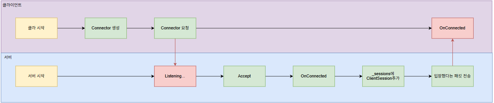
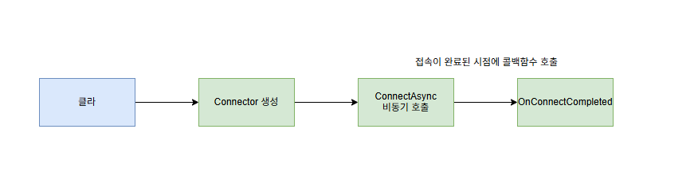

C# Game Server (TCP)
깃허브 링크: https://github.com/starkshn/C-GameServer
작업 기간 : 25.11.01 ~ 2511.14
작업자 : 김남영(본인)
사용 기술 : C#, Git, Visual Studio 2022, XML
Git repo URL : https://github.com/starkshn/C-GameServer
이해를 하고 있는 부분
- IOCP 기반 비동기 서버 작동 방식 이해
- Session / JobQueue / Thread-Safe 구조에 대한 이해
- RecvBuffer / SendBuffer 존재 이유와 구현에 대한 이해
- 클라이언트 ↔ 서버간 동기화 및 패킷 설계에 대한 이해
- Packet 설계에 대한 이해 및 패킷 생성 자동화에 대한 이해
- JobQueue 사용이유, 쓰레드 경합 해결방법에 대한 이해
- Packet Gathering 기법에 대한 이해
1. 클라 ↔ 서버 접속 흐름

[클라 & 서버 연결 과정과 패킷 전달의 전체 과정을 도식화 하였습니다]


[서버]
- Listener 생성 및 초기화
- 주소를 Bind
- Listen : 클라 접속 대기
- 접속이 된경우 ClientSession생성 및 초기화
- RecvBuffer, SendBuffer 초기화 및 SetBuffer호출
[클라이언트]
- Connector 생성 (클라의 접속 상태를 관리하기 위한 객체)
- Connector를 통해 비동기 connect 요청
- 연결이 된 경우 ServerSession 생성
- 세션 초기화
- 버퍼 초기화 및 SetBuffer를 호출하여 recv할 준비 완료
2. 클래스 구조 분석
아래 구조에 대해서 번호를 할당하여 설명을 하도록 하겠습니다.

구현 기능
2-1) Session 클래스
- Code
📝 Code
public abstract class Session
{
Socket _socket;
int _disconnected = 0;
RecvBuffer _recvBuffer = new RecvBuffer(1024);
object _lock = new object();
Queue<ArraySegment<byte>> _sendQueue = new Queue<ArraySegment<byte>>();
List<ArraySegment<byte>> _pendingList = new List<ArraySegment<byte>>();
SocketAsyncEventArgs _sendArgs = new SocketAsyncEventArgs();
SocketAsyncEventArgs _recvArgs = new SocketAsyncEventArgs();
public abstract void OnConnected(EndPoint endPoint);
public abstract int OnRecv(ArraySegment<byte> buffer);
public abstract void OnSend(int numOfBytes);
public abstract void OnDisconnected(EndPoint endPoint);
public void Start(Socket socket)
{
_socket = socket;
_recvArgs.Completed += new EventHandler<SocketAsyncEventArgs>(OnRecvCompleted);
_sendArgs.Completed += new EventHandler<SocketAsyncEventArgs>(OnSendCompleted);
RegisterRecv();
}
public void Send(ArraySegment<byte> sendBuff)
{
lock (_lock)
{
_sendQueue.Enqueue(sendBuff);
if (_pendingList.Count == 0)
RegisterSend();
}
}
public void Disconnect()
{
if (Interlocked.Exchange(ref _disconnected, 1) == 1)
return;
OnDisconnected(_socket.RemoteEndPoint);
_socket.Shutdown(SocketShutdown.Both);
_socket.Close();
}
#region 네트워크 통신
void RegisterSend()
{
while (_sendQueue.Count > 0)
{
ArraySegment<byte> buff = _sendQueue.Dequeue();
_pendingList.Add(buff);
}
_sendArgs.BufferList = _pendingList;
bool pending = _socket.SendAsync(_sendArgs);
if (pending == false)
OnSendCompleted(null, _sendArgs);
}
void OnSendCompleted(object sender, SocketAsyncEventArgs args)
{
lock (_lock)
{
if (args.BytesTransferred > 0 && args.SocketError == SocketError.Success)
{
try
{
_sendArgs.BufferList = null;
_pendingList.Clear();
OnSend(_sendArgs.BytesTransferred);
if (_sendQueue.Count > 0)
RegisterSend();
}
catch (Exception e)
{
Console.WriteLine($"OnSendCompleted Failed {e}");
}
}
else
{
Disconnect();
}
}
}
void RegisterRecv()
{
_recvBuffer.Clean();
ArraySegment<byte> segment = _recvBuffer.WriteSegment;
_recvArgs.SetBuffer(segment.Array, segment.Offset, segment.Count);
bool pending = _socket.ReceiveAsync(_recvArgs);
if (pending == false)
OnRecvCompleted(null, _recvArgs);
}
void OnRecvCompleted(object sender, SocketAsyncEventArgs args)
{
if (args.BytesTransferred > 0 && args.SocketError == SocketError.Success)
{
try
{
// Write 커서 이동
if (_recvBuffer.OnWrite(args.BytesTransferred) == false)
{
Disconnect();
return;
}
// 컨텐츠 쪽으로 데이터를 넘겨주고 얼마나 처리했는지 받는다
int processLen = OnRecv(_recvBuffer.ReadSegment);
if (processLen < 0 || _recvBuffer.DataSize < processLen)
{
Disconnect();
return;
}
// Read 커서 이동
if (_recvBuffer.OnRead(processLen) == false)
{
Disconnect();
return;
}
RegisterRecv();
}
catch (Exception e)
{
Console.WriteLine($"OnRecvCompleted Failed {e}");
}
}
else
{
Disconnect();
}
}
#endregion
}
서버에서는 클라이언트 수 만큼 ClientSession을 가지고 있고 클라이언트는 각각 ServerSession을 가지는 모습을 표현
>

각 세션마다 Send를 하는 과정을 그린 그림, SendQueue에 쌓아 두었다가 pendingList로 한번에 옮겨서 보내는 과정
병합을 최소화 하기 위해서(매번 요청이 올 때마다 Send하지 않기 위함, PendingList에 한번에 모아서 한방에 보내기)
>
Session 필요한 이유
연결 1개(소켓 1개)의 수명주기/비동기IO/버퍼/동시성 제어를 한 곳에서 관리하기 위해 필요하다고 생각하였습니다.
>
구현한 이유
상위 로직은 “연결 이벤트와 바이트 블록”만 다루게하고 저수준 소켓처리(ReceiveAsync/SendAsync, SAEA재사용, 에러/종료)는 캡슐화하기 위해서 구현하였습니다.
>
구현한 방법
- Start/Send/Disconnect와 OnConnected/OnRecv/OnSend/OnDisconnect 콜백으로 인터페이스화
- RecvBuffer(부분 수신 누적) + sendQueue/_pendingList(배치 송신)사용
- InterLocked.Exchange로 Disconnect 1회만 허용
- _lock으로 송신 경로만 최소 임계영역 유지, 수신은 완료 콜백 단일 경로 유지하도록 설계
얻을 수 있는 효과
- 모듈화/재사용성 향상, 에러 경계 명확
- 송수신 경합 감소로 분산 안정화
- 유지보수 용이(상위 로직은 컨텐츠에만 집중할 수 있음)
sendQueue / pendingList 구조 포함 상세 설명
왜 둘 다 필요한가?
TCP Send는 비동기라서, SendAsync를 호출한 이후에는
OS가 아직 버퍼를 사용 중일 수 있습니다.
따라서 전송 중에는 리스트를 절대 수정하면 안 됩니다.
그래서 두 자료구조를 분리했습니다.

2-2) Connector 클래스
- Code
📝 Code
using System;
using System.Collections.Generic;
using System.Net;
using System.Net.Sockets;
using System.Text;
namespace ServerCore
{
public class Connector
{
Func<Session> _sessionFactory;
public void Connect(IPEndPoint endPoint, Func<Session> sessionFactory)
{
// 휴대폰 설정
Socket socket = new Socket(endPoint.AddressFamily, SocketType.Stream, ProtocolType.Tcp);
_sessionFactory = sessionFactory;
SocketAsyncEventArgs args = new SocketAsyncEventArgs();
args.Completed += OnConnectCompleted;
args.RemoteEndPoint = endPoint;
args.UserToken = socket;
RegisterConnect(args);
}
void RegisterConnect(SocketAsyncEventArgs args)
{
Socket socket = args.UserToken as Socket;
if (socket == null)
return;
bool pending = socket.ConnectAsync(args);
if (pending == false)
OnConnectCompleted(null, args);
}
void OnConnectCompleted(object sender, SocketAsyncEventArgs args)
{
if (args.SocketError == SocketError.Success)
{
Session session = _sessionFactory.Invoke();
session.Start(args.ConnectSocket);
session.OnConnected(args.RemoteEndPoint);
}
else
{
Console.WriteLine($"OnConnectCompleted Fail: {args.SocketError}");
}
}
}
}
필요한 이유
- 클라이언트 비동기 접속 표준화 및 성공 시점 세션 생성
구현한 이유
- 블로킹 Connect 회피, Listener와 대칭 구조로 단순화
구현한 방법
- Socket.ConnectAsync + SAEA.Completed 패턴 적용
- Func
을 성공 콜백에서 Invoke()하여 세션 생성/시작
얻을 수 있는 효과
- UI/메인 쓰레드 블로킹 제거
- 실패 시 불필요 할당 없음(지연 생성)
- 테스트/치환이 용이

2-3) RecvBuffer
- Code
📝 Code
using System;
using System.Collections.Generic;
using System.Text;
namespace ServerCore
{
public class RecvBuffer
{
// [r][][w][][][][][][][]
ArraySegment<byte> _buffer;
int _readPos;
int _writePos;
public RecvBuffer(int bufferSize)
{
_buffer = new ArraySegment<byte>(new byte[bufferSize], 0, bufferSize);
}
public int DataSize { get { return _writePos - _readPos; } }
public int FreeSize { get { return _buffer.Count - _writePos; } }
public ArraySegment<byte> ReadSegment
{
get { return new ArraySegment<byte>(_buffer.Array, _buffer.Offset + _readPos, DataSize); }
}
public ArraySegment<byte> WriteSegment
{
get { return new ArraySegment<byte>(_buffer.Array, _buffer.Offset + _writePos, FreeSize); }
}
public void Clean()
{
int dataSize = DataSize;
if (dataSize == 0)
{
// 남은 데이터가 없으면 복사하지 않고 커서 위치만 리셋
_readPos = _writePos = 0;
}
else
{
// 남은 데이터가 있으면 시작 위치로 복사
// public static void Copy(Array sourceArray, int sourceIndex, Array destinationArray, int destinationIndex, int length);
Array.Copy(_buffer.Array, _buffer.Offset + _readPos, _buffer.Array, _buffer.Offset, dataSize);
_readPos = 0;
_writePos = dataSize;
}
}
public bool OnRead(int numOfBytes)
{
if (numOfBytes > DataSize)
return false;
_readPos += numOfBytes;
return true;
}
public bool OnWrite(int numOfBytes)
{
if (numOfBytes > FreeSize)
return false;
_writePos += numOfBytes;
return true;
}
}
}
제가 구현한 C#서버의 RecvBuffer의 구조를 크게 그려본 그림입니다.
>

TCP는 연결형 + Packet의 순서를 보장하지만 잘려서 올 수 있다는 부분을 표현해보았습니다.
>
필요한 이유
- TCP는 경계를 보장하지 않아 부분 수신 누적/프레이밍이 필수라고 생각하였습니다.
구현한 이유
- 매 수신마다 할당없이 커서 전진 + 1회 복사로 비용 절감
구현 방법
- 단일 배열 + readPos/writePos 커서를 사용
- WriteSegment/ReadSegment, OnWrite/OnRead/Clean 함수 구현
- 세션별 인스턴스로 상태/수명 격리
얻을 수 있는 효과
- Zero(또는 최소) 추가 할당, GC 압박 감소
- 프레이밍 안정/일관(부분,다중 패킷 안전)
- 락 불필요(세션 단독 소유)

Clean함수를 호출하기전

Clean함수를 호출하여 _readPos, _writePos 커서를 이동시키고 데이터를 1회 복사하고 난 후
RecvBuffer 멤버 변수들을 그림으로 표현

- DataSize : 현재 읽을 수 있는 길이를 의미합니다.
- FreeSize : 현재 사용할 수 있는 여유 공간을 의미합니다.
- ReadSegment : 현재 읽을 배열을 의미합니다. 앱이 읽을 유효 공간을 의미.
- WriteSegment : 현재 쓸 수 있는 배열을 의미합니다. (OS가 쓸 공간)

이렇게 하나의 버퍼에 _readPos, _writePos두개의 커서를 두고 복사 비용을 1회로 하여 배열을 매번 생성하지 않고 재사용하는 방식으로 RecvBuffer를 구현하였습니다.
>
2-4) SendBuffer
- Code
📝 Code
using System;
using System.Collections.Generic;
using System.Text;
using System.Threading;
namespace ServerCore
{
public class SendBufferHelper
{
public static ThreadLocal<SendBuffer> CurrentBuffer = new ThreadLocal<SendBuffer>(() => { return null; });
public static int ChunkSize { get; set; } = 4096 * 100;
public static ArraySegment<byte> Open(int reserveSize)
{
if (CurrentBuffer.Value == null)
CurrentBuffer.Value = new SendBuffer(ChunkSize);
if (CurrentBuffer.Value.FreeSize < reserveSize)
CurrentBuffer.Value = new SendBuffer(ChunkSize);
return CurrentBuffer.Value.Open(reserveSize);
}
public static ArraySegment<byte> Close(int usedSize)
{
return CurrentBuffer.Value.Close(usedSize);
}
}
public class SendBuffer
{
// [][][][][][][][][u][]
byte[] _buffer;
int _usedSize = 0;
public int FreeSize { get { return _buffer.Length - _usedSize; } }
public SendBuffer(int chunkSize)
{
_buffer = new byte[chunkSize];
}
public ArraySegment<byte> Open(int reserveSize)
{
if (reserveSize > FreeSize)
return null;
return new ArraySegment<byte>(_buffer, _usedSize, reserveSize);
}
public ArraySegment<byte> Close(int usedSize)
{
ArraySegment<byte> segment = new ArraySegment<byte>(_buffer, _usedSize, usedSize);
_usedSize += usedSize;
return segment;
}
}
}
필요한 이유
- 매 패킷 new byte[] 없이 대용량 청크에서 조각만 사용
구현한 이유
- GC/시스템 콜 비용을 줄이고 배치 송신과 직렬화 단순화
구현한 방법
- ThreadLocal
로 스레드 별로 청크를 1개씩 배치 - Open(reserver) → Close(used) 선형 할당, ArraySegment
로 변환
얻을 수 있는 효과
- 할당/복사 최소화로 Throughout이 증가/ GC 감소
- 송신 경로 락 제거
- 배치 송신(BufferList)과 결합


[스레드 별로 SendBuffer를 관리하게 한 이유]

클라1~5가 하나의 필드에서 각자 다 이동을 한다고 가정을 하면 클라1은 클라2~5까지에게 이동 패킷을 보내야 하고 클라2도 마찬가지로 클라1, 클라3~4한테 이동 패킷을 보내야합니다. → O(N^2)
>

각 세션별로 SendBuffer를 가지고 있으면 세션 수만큼 메모리 부화가 커지게 됩니다. 따라서 클라이언트에서 비동기로 보낸 패킷을 서버의 하나의 쓰레드가 받게 되면 쓰레드 별로 OnRecv를 하여 SendBuffer에서 이를 한번에 처리할 수 있도록 하였습니다.
>
2-5) PacketSession

- Code
📝 Code
public abstract class PacketSession : Session
{
public static readonly int HeaderSize = 2;
// [size(2)][packetId(2)][ ... ][size(2)][packetId(2)][ ... ]
public sealed override int OnRecv(ArraySegment<byte> buffer)
{
int processLen = 0;
while (true)
{
// 최소한 헤더는 파싱할 수 있는지 확인
if (buffer.Count < HeaderSize)
break;
// 패킷이 완전체로 도착했는지 확인
ushort dataSize = BitConverter.ToUInt16(buffer.Array, buffer.Offset);
if (buffer.Count < dataSize)
break;
// 여기까지 왔으면 패킷 조립 가능
OnRecvPacket(new ArraySegment<byte>(buffer.Array, buffer.Offset, dataSize));
processLen += dataSize;
buffer = new ArraySegment<byte>(buffer.Array, buffer.Offset + dataSize, buffer.Count - dataSize);
}
return processLen;
}
public abstract void OnRecvPacket(ArraySegment<byte> buffer);
}필요한 이유
- [size(2)][id(2)][payload] 길이 프레이밍을 모든 세션에서 통일 시키기 위함.
구현한 이유
- 부분/다중 패킷 혼재를 공통 루프로 안정 처리, 상위는 완성된 패킷만 다루게하기 위해서 구현하였습니다.
구현한 방법
- OnRecv를 Sealed처리, 헤더 확인 → 완정성 확인 → OnRecvPacket 반복호출
- 처리 길이를 반환해 RecvBuffer 커서 정확하게 전진할 수 있도록 설계
얻을 수 있는 효과
- 프로토콜 해석 일관성, 버그 표면적 감소
- 컨텐츠 코드는 바이트 스트림이 아닌 패킷 단위로 단순화할 수 있음.

해당함수에서 2바이트 만큼(패킷의 전체 길이)를 먼저 읽어서 OnRecvPacket에 전달해주기 때문에 정확히 하나의 패킷만을 전달이 가능하고 dataSize를 충족하지 않으면 while문을 빠져 나가도록 설계하였습니다.
2-6) Packet Serialization (패킷 직렬화)
필요한 이유
- 빠른 이진 직렬화/역직렬화와 타입 안정성이 필요하다고 생각하였습니다.
구현한 이유
- 규약 중심(Span/Segment) Zero-alloc 직렬화로 성능/안정성 확보
구현한 방법
- 규약 : [size:ushort][id:ushort][payload], 문자열 = len(ushort) +UTF16
- 각 패킷 클래스에 Read/Write 내장, BitConverter.TryWriteBytes 활용
얻을 수 있는 효과
- 성능 안정(복사/할당 최소화), 타입 안전
- 변경 용이(필드 옆에 직렬화 코드 응집
📝 Code
ArraySegment<byte> segment = SendBufferHelper.Open(4096);
Span<byte> s = new Span<byte>(segment.Array, segment.Offset, segment.Count);
ushort count = 0;
count += sizeof(ushort); // size 자리 비워두기
TryWrite(packetId);
Write(payload...);
BitConverter.TryWriteBytes(s, count); // 맨 앞(size) 채우기
return SendBufferHelper.Close(count);📝 Code
ReadOnlySpan<byte> s = new ReadOnlySpan<byte>(segment.Array, segment.Offset, segment.Count);
ushort count = 0;
count += sizeof(ushort); // size skip
count += sizeof(ushort); // packetId skip
ushort chatLen = BitConverter.ToUInt16(s.Slice(count, s.Length - count));
count += sizeof(ushort);
this.chat = Encoding.Unicode.GetString(s.Slice(count, chatLen));
count += chatLen;2-7) Packet Generator (패킷 자동 생성)
패킷 자동생성 흐름 도식화

필요한 이유
- 잦은 스키마 변경에서 오타/누락/불일치를 방지.
구현한 이유
- “PDL → 코드” 자동화로 정합성/생산성/일관성 향상
구현한 방법
- PDL.xml 파싱 → GenPackets.cs, Client/ServerPacketManager.cs 생성
- 템플릿(PacketFormat) 기반 코드 방출, 스크립트로 프로젝트에 복사
얻을 수 있는 효과
- 작업 시간 대폭 단축, 실수 감소
- 클라/서버 프로토콜 동기화 자동 보장
입력 스키마(PDL.xml)
📝 Code
<PDL>
<packet name="C_Chat">
<string name="chat"/>
</packet>
<packet name="S_Chat">
<int name="playerId"/>
<string name="chat"/>
</packet>
</PDL>템플릿(PacketFormat.cs)
생성될 소스코드의 뼈대와 라인을 담은 문자열들을 가지고 있는 파일입니다.
- fileformat : PacketID, IPacket 각 패킷 클래스를 정의
- packetFormat : 단일 패킷 클래스 + Read/Write
- managerFormat : PacketManager(라우팅/핸들링)
- managerRegisterFormat : 등록 라인2개(onRecv/handler)
- 각 필드별 read/write 조각 템플릿 정의
stringFormat함수를 통해 {0}/{1}/{2}에 파싱 결과를 삽입한다.
PacketManager(라우팅)
패킷ID를 통해 → 파서와 핸들러를 매핑하였습니다.
📝 Code
_onRecv.Add((ushort)PacketID.C_Chat, MakePacket<C_Chat>);
_handler.Add((ushort)PacketID.C_Chat, PacketHandler.C_ChatHandler);OnRecvPacket함수에서
- header에서 id추출
- _onRecv[id] 호출 → MakePacket
가 pkt.Read로 역직렬화 - _handler[pkt.Protocol]호출 → 실제 로직 처리
수신/파싱/핸들링을 데이터-주도 라우팅 테이블로 분리해 확장성을 높이고 유지보수성을 높였습니다.
자동화 파일 복사 및 배치
📝 Code
START ../../PacketGenerator/bin/PacketGenerator.exe ../../PacketGenerator/PDL.xml
XCOPY /Y GenPackets.cs "../../DummyClient/Packet"
XCOPY /Y GenPackets.cs "../../Server/Packet"
XCOPY /Y ClientPacketManager.cs "../../DummyClient/Packet"
XCOPY /Y ServerPacketManager.cs "../../Server/Packet"빌드 후 생성된 파일을 위의 배치파일 명령어들을 통해 클라이언트와 서버쪽에 동일한 패킷코드와 매니져 클래스들을 복사 할 수 있도록 하였습니다.
2-8) JobQueue
- Code
📝 Code
using System;
using System.Collections.Generic;
using System.Text;
namespace ServerCore
{
public interface IJobQueue
{
void Push(Action job);
}
public class JobQueue : IJobQueue
{
Queue<Action> _jobQueue = new Queue<Action>();
object _lock = new object();
bool _flush = false;
public void Push(Action job)
{
bool flush = false;
lock (_lock)
{
_jobQueue.Enqueue(job);
if (_flush == false)
flush = _flush = true;
}
if (flush)
Flush();
}
void Flush()
{
while (true)
{
Action action = Pop();
if (action == null)
return;
action.Invoke();
}
}
Action Pop()
{
lock (_lock)
{
if (_jobQueue.Count == 0)
{
_flush = false;
return null;
}
return _jobQueue.Dequeue();
}
}
}
}
using ServerCore;
using System;
using System.Collections.Generic;
using System.Text;
namespace Server
{
class GameRoom : IJobQueue
{
List<ClientSession> _sessions = new List<ClientSession>();
JobQueue _jobQueue = new JobQueue();
List<ArraySegment<byte>> _pendingList = new List<ArraySegment<byte>>();
public void Push(Action job)
{
_jobQueue.Push(job);
}
public void Flush()
{
// N ^ 2
foreach (ClientSession s in _sessions)
s.Send(_pendingList);
Console.WriteLine($"Flushed {_pendingList.Count} items");
_pendingList.Clear();
}
public void Broadcast(ClientSession session, string chat)
{
S_Chat packet = new S_Chat();
packet.playerId = session.SessionId;
packet.chat = $"{chat} I am {packet.playerId}";
ArraySegment<byte> segment = packet.Write();
_pendingList.Add(segment);
}
public void Enter(ClientSession session)
{
_sessions.Add(session);
session.Room = this;
}
public void Leave(ClientSession session)
{
_sessions.Remove(session);
}
}
}필요한 이유

어떤 공간에 유져가 5명이 있다고 가정을 하도록 하겠습니다.(Room이라는 공간에)
이 5명은 각자 메세지를 보내고 이동하는 행위들을 반복하는 경우 서버에서는 client1이 보낸 메세지를 브로드 캐스트 한다고 가정을 하겠습니다. (client2~5에 대한 패킷들도 마찬가지로 브로드 캐스트 합니다)
이런 경우 코드를 아래와 같이 작성할 수 있습니다.
📝 Code
public void Broadcast(ClientSession session, string chat)
{
S_Chat packet = new S_Chat();
packet.playerId = session.SessionId;
packet.chat = $"{chat} I am {packet.playerId}";
ArraySegment<byte> segment = packet.Write();
lock (_lock)
{
foreach (ClientSession s in _sessions)
{
s.Send(segment);
}
}
}위 코드는 어떤 클라이언트가 보낸 메세지를 string chat으로 받아 같은 공간에 있는 다른 클라이언트들에게 chat이라는 메세지를 보내는 함수입니다.
락을 잡은뒤 한번에 하나의 쓰레드만이 Send를 할 수 있도록 설계하였습니다.
이렇게 할 경우 인원수가 작은 경우 큰 문제가 되지 않지만 같은 공간에 100명 500명 이런식으로 있는 경우 시간복잡도는 N^2이라는 시간복잡도를 가지게 되고 아래와 같은 문제가 발생할 수 있습니다.
- 락 경합 증가
- 컨텍스트 스위칭 비용증가
- 스레드풀 큐에서 일감 대기 행렬 증가 → 효율을 떨어트림
- 메세지 순서/일관성 관리 난이도가 올라감

락을 걸고 특정 루프를 돌며 로직을 실행하는 경우 스레드 끼리의 병합이 심해질 수 있다는 것을 표현한 그림입니다.
>

락을 걸긴하지만 SendQueue에다가 자신의 할일 만 넣고 나오기 때문에 왼쪽 경합보다는 상대적으로 덜하다는 것을 표현한 그림입니다.
>
이런 문제를 해결하기 위해서 Command Pattern을 적용하여 일을 “요청하는 부분”과 “처리하는 부분” 두가지로 나누어서 처리할 수 있도록 하여 위의 아래 효과들을 이루었습니다.
- 락 경합 최소화
공유 상태(세션 목록, 룸 상태)를 한 실행 루프에서만 컨트로
- 순서/일관성 보장
같은 Room내 이벤트는 Push된 순서대로 처리
- 지연 편차 감소
컨텍스트 스위칭/스레드 주입 감소로 지속시간 분포를 안정화 시킴
- 배치 전송 최적화
한 루프에서 모인 다수 전송을 BufferList등으로 한번에 송신
- 되돌리기
요청을 커맨드 객체로 모델링 → 최소/되돌리기 대응 가능
해결아이디어
브로드캐스트를 즉시 Send하지 않고 Jobqueue에서
- 패킷을 모아두고(_pendingList)
- 한번에(batch) 룸 인원에게 송신(Flush)
하도록 변경하였습니다.
📝 Code
public void Flush()
{
// N ^ 2
foreach (ClientSession s in _sessions)
s.Send(_pendingList);
Console.WriteLine($"Flushed {_pendingList.Count} items");
_pendingList.Clear();
}
public void Broadcast(ClientSession session, string chat)
{
S_Chat packet = new S_Chat();
packet.playerId = session.SessionId;
packet.chat = $"{chat} I am {packet.playerId}";
ArraySegment<byte> segment = packet.Write();
_pendingList.Add(segment);
}구현한 이유
- 요청/실행 분리로 단일 실행 흐름에서 순차처리해 일관성 확보
구현한 방법
- Queue
+ _flush 플래그 - Push()로 큐잉, Flush에서 순차 Invoke
얻을 수 있는 효과
- 락 경합/컨텍스트 스위칭 감소 → 안정된 지연
- 인벤트 순서 보장, 디버깅 쉬움
- Undo/취소 패턴 확장 용이
2-9) Packet Gathering (패킷 모아 보내기)
위 목록인 JubQueue와 연관된 기능 구현입니다.
도식화
필요한 이유
- 브로드캐스트를 즉시 개별 송신하면 시스템콜/락 경합 급증

여러 쓰레드가 패킷을 보낼 때 어떻게 패킷을 보내는지에 대해서 그린 그림입니다.
>

여러 패킷을 모아서 하나의 패킷으로 만들어 보내는 것을 표현한 그림입니다.
>
구현한 이유
- 일정 시간 모아 배치 송신으로 효율을 극대화하기 위함
구현한 방법
- Broadcast는 _pendingList에 축적만 한다.
- 주기 Flush()에서 세션별 Send(List) → 내부 BufferList로 SendAsync 1회 수행한다.
얻을 수 있는 효과
- 시스템콜/락 횟수 감서 → CPU효율을 높인다.
- 짧은 윈도우 내 메시지 순서/일관성 유지
- 순간 피크(스파이크) 완화
기능 구현 코드 설명
📝 Code
public void Broadcast(ClientSession session, string chat)
{
S_Chat packet = new S_Chat
{
playerId = session.SessionId,
chat = $"{chat} I am {packet.playerId}"
};
ArraySegment<byte> segment = packet.Write();
_pendingList.Add(segment); // ★ 지금은 모으기만 한다 (즉시 Send 하지 않음)
}이전처럼 lock을 걸어 Send하지 않고 _pendingList에 packet을 밀어넣고 해당 쓰레드는 일을 마치고 빠져나옵니다.
📝 Code
public void Flush()
{
foreach (ClientSession s in _sessions)
s.Send(_pendingList); // ★ 세션마다 “리스트 한 번” 전달 → 내부에서 BufferList로 SendAsync 1회
Console.WriteLine($"Flushed {_pendingList.Count} items");
_pendingList.Clear();
}특정시간이 경과돠면 Flush함수를 호출하여 _pendingList를 한번에 Send하여 packet전송의 효율을 높이도록 설계하였습니다.
📝 Code
public void Send(List<ArraySegment<byte>> sendBuffList)
{
if (sendBuffList.Count == 0) return;
lock (_lock)
{
foreach (var seg in sendBuffList)
_sendQueue.Enqueue(seg);
if (_pendingList.Count == 0)
RegisterSend();
}
}
void RegisterSend()
{
while (_sendQueue.Count > 0)
_pendingList.Add(_sendQueue.Dequeue());
_sendArgs.BufferList = _pendingList; // ★ 다중 버퍼(조각) 배치
bool pending = _socket.SendAsync(_sendArgs);
if (!pending) OnSendCompleted(...);
}
void OnSendCompleted(...)
{
_sendArgs.BufferList = null;
_pendingList.Clear();
// 필요 시 다음 배치로 재등록
}Session클래스의 Send와 관련된 코드들입니다.
핵심은 : BufferList를 활용하여 배치송신, 조각 여러개를 한번의 SendAsync로 보낼 수 있도로 설계하였습니다.
2-10) JobTimer
- Code
📝 Code
struct JobTimerElem : IComparable<JobTimerElem>
{
public int execTick; // 실행 시각 (Environment.TickCount 기준)
public Action action;
public int CompareTo(JobTimerElem other)
{
return other.execTick - execTick; // PriorityQueue 정렬용
}
}
class JobTimer
{
PriorityQueue<JobTimerElem> _pq = new PriorityQueue<JobTimerElem>();
object _lock = new object();
public static JobTimer Instance { get; } = new JobTimer();
// 1) 등록: 지금으로부터 tickAfter(ms) 뒤에 실행
public void Push(Action action, int tickAfter = 0)
{
JobTimerElem job;
job.execTick = Environment.TickCount + tickAfter;
job.action = action;
lock (_lock) { _pq.Push(job); }
}
// 2) 실행: 지금(now) 시각이 된 작업만 꺼내 즉시 실행
public void Flush()
{
while (true)
{
int now = Environment.TickCount;
JobTimerElem job;
lock (_lock)
{
if (_pq.Count == 0) break;
job = _pq.Peek();
if (job.execTick > now) break;
_pq.Pop();
}
job.action.Invoke(); // ★ 락 밖에서 실행 (중요)
}
}
}
잡큐의 동작 방식을 도식화 하였습니다.
>

잡(Task)의 시간 우선순위를 우선순위 큐로 관리하고 있습니다.
>
필요한 이유
- Flush/리트라이/주기 작업 등 지연/주기 실행 스케줄링이 필요하다고 생각했습니다.
- 쌓인 일을 이정 주기 마다 한번에 처리하기 위해서 필요하다고 생각했습니다.
구현한 이유
- 간단한 틱 기반 스케줄러로 타이밍을 중앙에서 통제
구현한 방법
- 우선순위 큐
- Push(action, tickAfter) 예약, Flush()에서 현재 실행분만 꺼내 락 밖에서 실행
얻을 수 있는 효과
- 일정한 리듬/지연 상한 유지
- 스케줄 로직이 한 곳으로 모여 가시성이 올라가고 버그 발생확률이 줄어든다.
- 룸/세션 로직에서 타이머 코드 분리를 통해 응집도가 올라간다.

우의 과정을 우선순위 큐를 통해 O(LogN)으로 경과시간이 임박한 처리할일들을 관리할 수 있도록 하였습니다.